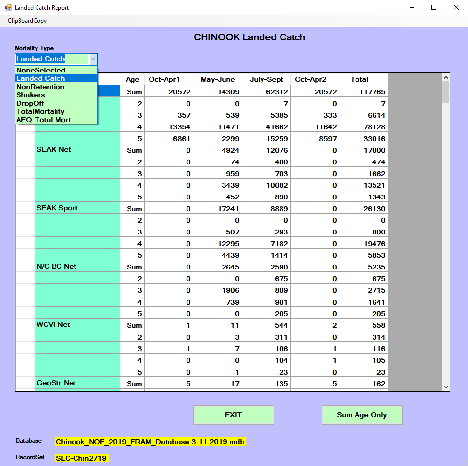
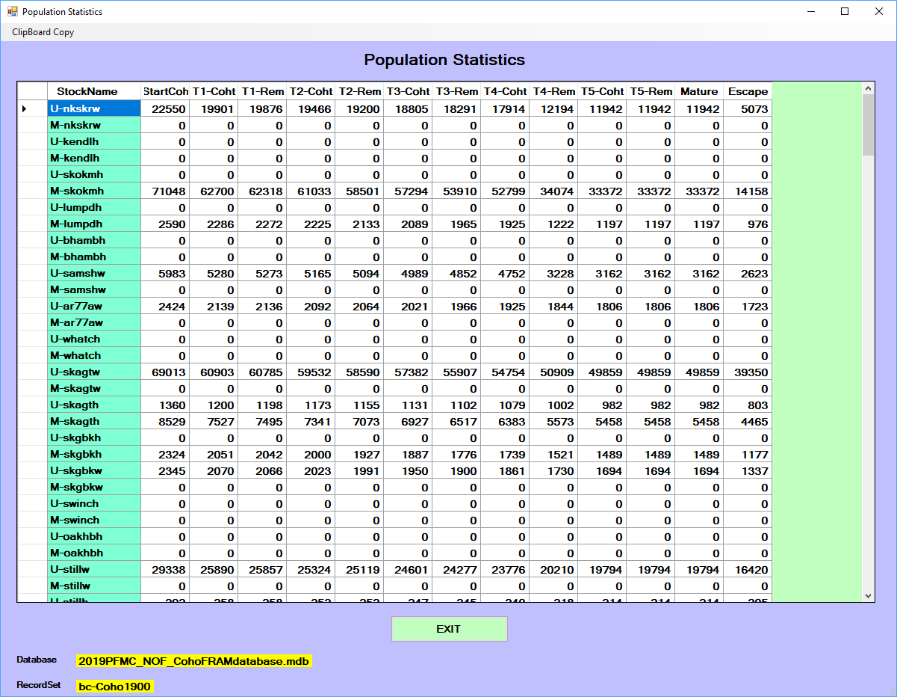
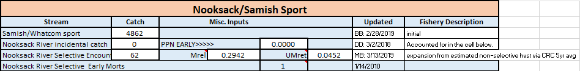

Main menu screen
After launching FRAM and continuing past the startup splash screen, the main menu organizes the available functionality. Below are links to sections that correspond to different main menu items as well as descriptions of some of the primary files associated with preparing and conducting runs.

- Open Database is the first step to using FRAM, opening a file selection window to choose a [Project database]
- FRAM Version Changes opens a window with summary text descriptions of the present and past versions
- Select Model Run allows the choice of a particular model run and associated parameters from the [Project database];
- FRAM Utilities opens a secondary menu of tools for managing files and runs
- Edit Model Run opens a secondary menu with options to alter stock and fishery parameters for the currently selected run
- Save Model Run Inputs ensures that changes to values in memory are written to the appropriate [Project database tables]
- Run Model triggers the calculation of outputs given the current parameter values and conditioned on several final choices
- Post Season Run initiates the process of a Backwards FRAM run (not necessarily during the post-season) that uses catch and terminal abundance to reconstruct pre-fishing cohorts
- Output/Results opens a secondary menu allowing selection of various [Outputs] following model run completion
- Exit closes the program
Edit model run
FRAM allows users to explore different management scenarios by adjusting “inputs” ([Per-run parameters]) that control fishery and stock properties.
For some analyses, it may make sense to adjust model parameters outside of the FRAM application. For example, a uniform increase or decrease in a group of fisheries over multiple time steps may be accomplished more easily by manipulating the project database directly.
However, the main menu “Edit model run” button accesses a convenient interface for changing individual values within the application. Clicking this produces a submenu divided into further “Stock” and “Fishery” buttons.

Stock recruits
Stock recruit scalers (StockRecruit in [Per-run parameters]) are multiplied against a base period abundance (BaseCohort in [Base period parameters]) to generate a starting, pre-fishing cohort by stock (and age for Chinook).
These parameters represent the magnitude of the current stock abundance relative to that during the base period years. Thus, a stock recruit scaler of 1 indicates an annual abundance for that stock equal to the base period, a value >1 is an abundance larger than the base period, and <1 is an abundance smaller than the base period.
Coho ‘Recruit Cohort’ values are in January age-3 units, whereas Chinook ‘Recruit Cohort’ contains four age-class specific initial ocean abundance values.
For preseason forward runs, stock recruit scaler values are a function of stock-specific forecasts provided by technical staff at the beginning of the planning cycle. They are generally established at the outset of preseason planning and then updated if necessary as additional data are available for the year (i.e. Canadian Chinook forecasts are not usually available until the end of March). For Chinook, stock recruit scalers are typically produced from terminal run size forecasts by running Backwards FRAM.
Accordingly, recruit scalers would not usually be manually adjusted during a typical forward model run, but the interface enables this possibility if, for example, one wanted to explore the implications of a much larger or smaller salmon return than was predicted or with a different age distribution (e.g., “what happens if stock X returns at half of what was forecast and/or with far more younger fish?”).
Note that updating the stock recruit scaler will automatically update the associated recruit cohort and vice versa.
The “Read Recruits” button can be used to load forecast values compiled in the external FRAMVSTemplate file from sheet FRAM_Recruits. Conversely, the “Fill Spreadsheet” button can be used to download values from the model run to the FRAMVSTemplate file, where additional notation or comments can be stored.

Stock/Fishery Scalers
Stock-fishery-specific exploitation rate (ER) scalers allow adjustments to the base period directed impacts of a particular fishery on a specific stock or group of stocks within each time step. These scalers function act on the base period fishery-stock-specific ERs.
These parameters can provide a temporary fix to an identified issue in the FRAM base period calibration. They are also used to represent negotiated closures within a fishery (e.g. a spatial closure). Any such adjustments must be supported by an accepted external analysis of fishery-stock interactions which demonstrates how and why the fishery would be expected to have different stock-specific contribution levels than it had during the base period years (e.g. CWT recoveries or genetic stock identification).
Stock-fishery-specific ER scalers display 0 until a fishery is selected from the upper left drop-down menu.
If a fishery/time-step is not modeled, a “****” is displayed with blue highlight.
By default, the values are equal to 1, which means the base period exploitation rate is used. Thus, a value >1 is a larger ER than the base period and <1 is smaller than the base period ER.
After choosing the focal fishery, the desired values are directly input into each cell and the “Ok - Done” button writes those changes to the project database for the active model run. These changes then persist across subsequently copied runs.
Few to none of these scalers may be “actively” modifying the many possible stock-fishery combinations in a FRAM run, and the red “Show Active Scalers” button presents a secondary screen filtered to and highlighting those particular instances. Although values cannot be directly modified on this screen, it can serve as a useful check of the current model run parameterization.
Fishery Quota/Scalers
These [Per-run parameters] control the representation of fishery effort and may be the most frequently adjusted FRAM element during preseason planning.
As noted in the [Edit input parameter values] section of [A Basic Forward Run], legal, landed catch fishery impacts are controlled by “quotas” and/or “scalers” which are in turn controlled by per-timestep fishery flags. Values entered or adjusted under the quota/scalers input menus are stored in the [Project database tables] FisheryScalers. Fisheries without an input will be modeled with a default fishery effort scaler of 0.0 (flag = 1).
The flag values (displayed in the interface) determine whether the fishery is treated as non-selective and/or mark selective, and whether catch is processed as a fixed expectation (quotas) or as effort relative to the base period (scalers). Both modes operate on the fishery as a whole, combining with stock and age specific exploitation rates to determine resulting impacts from the fishery.
Note that many fishery/time-step cells are filled with asterisks (****) designating a lack of base period information to model that stratum. If a fishery now operates in one of those time steps the input (and impacts) need to be combined with an adjacent fishery or time step.
A single value in the input interface (either a scaler or quota) can be entered, and once the model is run, the resulting associated value will be populated in the interface (e.g. enter a quota value here and proceed through the menus to complete a model run, which will then return the resulting scaler value for that entered quota). Several values can be entered or updated before clicking “OK – Done”.
The values for mark-selective fisheries are displayed on a secondary input screen that is displayed after selecting “Ok - done”. Only fishery and time steps flagged in the first fishery controls screen as mark-selective or a combination with a mark-selective component will be present in the secondary MSF input screen (flags 7, 8, 17, 18, 27,28; displaying a magenta highlight in Scaler/Quota cells). Thus, if you want to enter a MSF or change a MSF input parameter, be sure it is flagged as such first.
In addition to scaler and quota inputs, the MSF fishery controls input screen also contains four additional input parameters. Some of these parameters are derived and agreed-to each preseason planning cycle by salmon co-managers and others are set by the PFMC management process. Thus, some stay fairly static year-to-year and some change annually.
- Release Rate: Hooking release mortality rate (landed fish then released)
- Marked MisID: Release rate of marked fish that could be legally retained
- UnMark MisID: Retention rate of unmarked fish that should have been released
- DropOff Rate: Fishery-related mortality rate (fish that escape but die due to injury)
Note these four MSF input parameters cannot have a zero value and must be >0.0000.
Altering a fishery quota has fairly intuitive implications (though the target value may itself result from considerable additional calculation external to FRAM). In contrast, the particular numeric effects of altering fishery scalers requires more prior knowledge of the base period practices (and stock composition).
In addition to the direct adjustment of single values in the interface (which are then written to the database), the “Import catch” and “Export to spreadsheet” buttons provide functionality to read and write values for all fisheries and time steps at once from an external [FRAMVSTemplate file], on sheets FRAMinput and FRAM_MSF. Note also the “clipboard copy” option in the upper left corner of the interface.
Non-Retention
Coho or Chinook non-retention (CNR) inputs represent any fishery (or portion of a fishery) that will be open for salmon fishing but requires release of Coho or Chinook. Differences in the input menu screens for Coho and Chinook reflect the different methodologies.
For Chinook, similar to other inputs, control flag values (flags 1 – 4) determine the mode by which non-retention impacts are calculated, with different modes requiring various additional parameter values (Field1, Field2, Field3, Field4) (definitions displayed in the lower left of the interface window). Typically, only flag 3 (Legal/Sublegal Encounters) or flag 4 (Total Encounters) are used. Encounters for Puget Sound marine sport fisheries can be automatically updated using the [Automate Pass 1 Pass 2] button on the FRAM Utilities menu.
For Coho, non-retention mortality is calculated outside of the model and entered as the total number of dead fish resulting from the non-retention portion of a fishery/time-step. Typically, the value is derived from a historic level of landed or encountered coho and then applying both a release mortality rate and a drop-off mortality rate to that historic level, and summing the two types of mortalities.
Similarly, the individual values can be altered (and consequently saved to the run in the database) and there is also a button to “Zero All Fields”. In addition, the interface provides options to “Import NonRetention” and “Export to Spreadsheet” all fishery/time steps from the external FRAMVSTemplate file (sheet FRAM_CNR).
Note many fishery/time-step cells are filled with asterisks (****) designating a lack of base period information to model that stratum. If a fishery now operates in one of those time steps the input (and impacts) need to be combined with an adjacent fishery or time step.
Size Limits (Chinook)
The minimum length of legal landed catch is defined per-fishery and time-step. This is relevant for multi-aged Chinook modeling where the minimum retention size limit (unit = fork length in millimeters) may vary annually, by fishery and/or by time-step. Generally:
- troll fisheries often require larger fish than sport in the same location and time
- winter limits are often smaller
Run Model
This menu item initiates a model run - applying the current parameters and input values to produce new output values.
The application monitors when a user may have altered values relative to the currently loaded run. If “Run Model” is selected when input values have changed but have not yet been saved to the project database tables associated with the model run, then a pop-up window will prompt with the message “Input Values Have Been Changed! Changes Must be Saved before Running Model!!! Save Current Model Run???”.
If you select “Yes” and save your model inputs by replacing the current model run or creating a new model run, then when you click “Run Model” from the Main Menu, it will present the Model Run Specifications menu.
If you select the “No”, a message will warn you “Please be aware that the OUTPUT for this model run cannot be duplicated without saving your INPUT values.” If you click “OK”, then it will present the Model Run Specifications menu.
The forwards FRAM Model Run Specifications menu screens include several optional checkboxes which differ by species. The sections below describe these in more detail.
The “Select TAMM” button is used to navigate to and select an associated TAMM file (see also Running FRAM with TAMM). Note that when a model run with a TAMM begins, the prompt “Do you want to save TAMM Transfer Values into TAMM spreadsheet?” will apear. Choosing “Yes” will ensure TAMX values are updated. After run completion, the TAMM file used will include updated values and be open, though possibly in the background. Make sure to navigate to the open TAMM file and save it to retain the modeled values.
Once the model run is complete, the model run name may have been updated with a prefix in the list of model runs within a database (Main Menu – Select Model Run to see list). For coho, the prefix “bc-“ is added when the default calculations for MSF bias correction have been used in a model run. For Chinook, the prefix “SLC-“ is added when the default calculations for size limit fix have been used in a model run.
Coho
Run coastal iterations
Beginning with the 2017 preseason, FRAM was updated to automate a previously manual process of iterating Washington coastal terminal fishery inputs between TAMM and FRAM. The fishery inputs are read into FRAM from a formatted table on TAMM sheet WACoastTerminal (starting row 150, cells in green highlight, as landed catch; flag 2 = fishery quota) and iterated to ± 1 fish.
When working with a Coho project database, from the main menu “Run Model” button, the Model Run Specifications screen requires you to select the TAMM file associated with the model run and then select the checkbox for “Run Coastal Iterations” before clicking the “RUN Model” button to complete the process.
By default, this checkbox should be used/checked with all preseason Coho model runs, as Washington coastal iterations are needed every time a terminal area’s fishery structure changes or when a pre-terminal FRAM fishery changes the ocean escapement value.
In general, FRAM produces an ocean escapement for each Washington coastal coho stock and regional technical staff utilize those values in regional terminal harvest management models. The local stock-specific harvest rates from the regional terminal models are then utilized in the WACoastTerminal sheet of the TAMM and in subsequent calculations. These results differ from the base period exploitation rates used in FRAM.
However, FRAM is used with base period stock composition for associated impacts upon non-local stocks in terminal regional fisheries with “dip-ins” (i.e. fish which could be expected to return to their native systems if not harvested; not a stray).
Thus, the final results of stock impacts in Washington coastal terminal fisheries are a combination of regional specific local stock impacts and those produced by the FRAM and its base period.
Run without MSF bias correction
By default, a mark-selective fishery bias correction factor is used in both preseason and post-season Coho FRAM modeling. The MSF bias correction in FRAM was a result of demonstrating that unmarked mortalities were underestimated due to multiple encounter bias from mark-selective fisheries [@conrad2010] and the desire to incorporate bias-corrected equations into FRAM [@conrad2011, @ahb2012].
The checkbox “Run w/o MSF Bias Correction” should not be checked except in unusual circumstances or for troubleshooting purposes. As a result of the MSF bias correction factor calculations in FRAM, the program will often prompt the user with a warning that a particular stock has exceeded 100% ER (i.e. the stock size has gone negative in the model and at what point). This is often helpful in troubleshooting issues with fishery inputs.
Chinook
Use Chinook TAMM FWS (No Iterations)
Selecting this button when running FRAM with TAMM will not load TAMI values into FRAM, yet load TAMX output into TAMM. Existing FRAM terminal fishery values will be used to run FRAM. TAMM iterations will not be performed.
This button is rarely used, but can be a helpful shortcut when needing TAMM output, but TAMM terminal fishery inputs are not available. Compiling information for a long time series of post-season runs is an example of where this procedure may be beneficial. TAMM consolidates a multitude of terminal fishery inputs into just a few key TAMI values. These fewer, consolidated values are easier to compile than the detailed TAMM inputs (e.g., avoiding splitting post-season catches into regulation periods for sockeye, coho, chum etc.). Terminal fishery catches can be directly entered into FRAM. As long as TAMM contains updated terminal run sizes and freshwater inputs, TAMX output will be compatible with the TAMM it is loaded into.
Chinook Brood Year AEQ Report
Selecting this check box produces a brood year exploitation rate report called “BY-Cohort-Compare-FramVS.txt” located in the same directory as the FRAM database.
Brood year calculations subject the forecast abundance of an age to the current fishing year’s fishery inputs, calculate the resulting escapement as well as the number of fish remaining in the ocean and advance to the next age. The resulting age+1 is then also subjected to the same fishery inputs, until age 5 is reached. Thus the same fishery inputs are used for all four ages (2-5) resulting from a brood year. FRAM algorithms are applied to each age class in forward and reverse mode.
Note that, in contrast, a “true” brood year run would apply fishery inputs from the first year to age 2s, compute the resulting age 3s, apply fishery inputs from year+1 to these age 3s, compute the resulting age 4s, apply fishery inputs from year+2 to these age 4s, compute the resulting age 5s, and finally apply fishery inputs from year+3 to the age 5s.
Forward and reverse brood year computations by age; i.e. calculate age 2 starting cohort for age 3 forecast with reverse calculations, then calculate age 4 and 5 starting cohort with forward calculations.
This then generates a report with this type of information:
No size limit fix
FRAM allows for evaluations of the effect of changes in minimum size limit regulations to fishery catches and stock impacts. Size limits are altered infrequently in hook and line salmon fisheries. FRAM’s original size limit evaluation algorithms were problematic, because they resulted in changes to the number of total encounters with each size limit change. FRAM uses different rates to model encounters of legal and sublegal fish. These rates are computed during the calibration process and are based on landed catch and encounter information during base period years (currently brood years 2005-2008).
When size limits are modeled in FRAM, each fish smaller than the size limit is treated as a sublegal fish. Sublegal encounter rates are used to compute releases and release mortalities. Conversely, each fish larger than the size limit is deemed legal and legal encounter rates are used to estimate catch as well as releases and release mortalities in mark selective fisheries. As the size limit is changed, a portion of the population (with sizes between the old and the new size limit) that previously received a sublegal encounter rate will receive a legal encounter rate or vice versa. Because legal and sublegal encounter rates are not the same for the same stock and age, this leads to the total number of computed encounters varying with size limits, an incorrect outcome, if effort remains constant.
FRAM incorporates corrected equations that hold total encounters constant, regardless of the modeled size limit (@ahb2013, @mchugh2015, @johnson2015).
In a first round of evaluations, FRAM computes sublegal encounters using sublegal/legal ratios based on recent field data (i.e., length-frequency data for Chinook encounters in recreational test fisheries). These ratios are updated each year in the [Project database tables] “SLRatio”. To produce the desired sublegal encounters, FRAM iteratively calculates an “Encounter Rate Adjustment” for each fishery and time step, such that sublegal encounters summed over stocks and ages within a fishery and time step produce the target sublegal/legal ratios, given legal sized, landed catch inputs (fishery scalers or quotas). Once run, “Encounter Rate Adjustments” are stored in the “RunEncounterRateAdjustment” column of the “SLRatio” table.
Size limit changes are evaluated with Van Bertalanffy growth equations. These equations determine the proportion legal and or/sublegal by stock and age under desired size limit regulations. The model calculates the legal and sublegal encounters for both the original and new minimum size limit and then adjust the differences so that total encounters remain constant.
When the new size limit is less than the base-period size limit, the difference in sublegal encounters between the base size-limit and the new size-limit becomes landed catch that is added to the calculated landed catch evaluated at the base-period size limit. Encounters are calculated by dividing the encounter estimates by the sublegal release mortality rate.
Conversely, when the new size limit is greater than the base-period size limit, the difference in landed catch between the new size limit and the base-period size limit becomes sublegal encounters. This encounter difference is added to the calculated sublegal encounters from the base-period size limit to get total sublegal encounter mortality.
When this button is checked, FRAM will not automatically update the encounter rate adjustments needed to achieve desired sublegal/legal ratios and instead use the encounter rate adjustments in the existing model run. FRAM will also revert to original size limit evaluation algorithms, where total encounters can fluctuate when size limits are changed.
If unsure, please leave this button unchecked (default), as the default setting will produce the most accurate run. However, there are several reasons to check the “No-Size-Limit-Fix” button:
- To speed up the run, as sublegal encounter iterations, especially when performed with TAMM, can be very time consuming. However, for correct results, the following assumptions need to be met:
- “Encounter Rate Adjustments” were updated during a previous model run and will result in desired sublegal/legal ratios (see Background paragraph above).
- The sublegal/legal ratios in the database were computed for the same size limits that exist in the current model run.
- For backwards compatibility to reproduce an “old-style” (pre 2013) run
Cohort T4 pre 2012 Processing
This button exists for backwards compatibility reasons. Prior to 2012, FRAM would not have reused time step 1 forecasts in time step 4 for ages with a missing “age minus 1” abundance. Chinook age up in time step 4; i.e. an age 2 fish becomes an age 3 fish, an age 3 fish turns age 4, etc. Previously, if a stock was not expected to return at a certain age, time 4 of age+1 would have been left blank. Since 2012, for these stocks, time step 4 of a given age reuses the time step 1 abundance of the same age.
S:L ratio update
Since 2014, FRAM computes sublegal encounters using sublegal/legal ratios (@mchugh2015, @johnson2015). These ratios are usually derived from recent field data (i.e., length-frequency data for Chinook encounters in recreational test fisheries) and updated annually in the “SLRatio” table of FRAM’s ACCESS database. To produce the desired sublegal encounters, FRAM iteratively calculates an “Encounter Rate Adjustment” for each fishery and time step such that sublegal encounters summed over stocks and ages within a fishery and time step produce the target sublegal/legal ratios, given legal sized landed catch inputs (fishery scalers or quotas). Once run, “Encounter Rate Adjustments” are stored in the “RunEncounterRateAdjustment” column of the “SLRatio” table.
The “S:L Ratio Update” button is a relic from pre-2019 FRAM.exe releases. The new FRAM default (leave “No Size Limit Fix” button unchecked) automatically updates Encounter Rate Adjustments with each model run in the course of computing size limit corrected legal and sublegal encounters.
When this button is clicked, FRAM will calculate “Encounter Rate Adjustments” for each fishery and time step such that sublegal encounters summed over stocks and ages within a fishery and time step produce the target sublegal/legal ratios. These ratios are then stores in the “RunEncounterRateAdjustment” column of the “SLRatio” table.
A message box will appear when clicking the “S:L Ratio Update” button.

The user then has the option to check “Load TargetRatio from spreadsheet” box before clicking the “Initialize” button. This brings up a file selection dialog box. Choose the file with the desired sublegal/legal ratios. The file will most likely have “SL Ratios…” in the title and contain a tab called “SLRatioImport”. If the ratios are already loaded, leave this box unchecked. As soon as the ratios are loaded in the database, within a few seconds of clicking “Initialize”, FRAM’s “Run-Menu” will appear. Select the “Run Model” button to run FRAM as usual.
Since “Encounter Rate Adjustments” are automatically updated in the default mode, selecting this option only makes sense in combination with clicking the “No Size Limit Fix” button. This results in a model run with updated “Encounter Rate Adjustments”, but old size limit evaluations. Doing so is only advisable if the user is sure that size limits in the current model run are compatible with the sublegal/legal ratios in the database. One other reason to select the “S:L Ratio Update” button is the option to programmatically load target sublegal/legal ratios from an Excel workbook as described above.
Output/Results
A FRAM model run produces [Output values] that are stored in several [Project database tables].
These results can be accessed and analyzed with external applications such as R or Microsoft Excel, and this is often preferable when addressing multiple model runs. For example, when examining a particular stock or fishery across multiple model runs within a single project database, the key tables can be joined and filtered to reach a focal subset for further manipulation and visualization.
However, the FRAM application also provides functionality to interactively view results for a single run by selecting the main menu button Output/Results.
Screen reports
The “Output Type Selection” submenu offers Screen Reports. Note that if all values are zero within these reports, then the model must be run in the project database to generate actual results.

Selecting this then displays several further options.

Select a screen report by clicking in the appropriate checkbox. Once in view, note that many of these reports include a “clipboard copy” option in the upper left corner. This allows the user to paste the data into other external programs (e.g., Microsoft Word or Excel).
Fishery mortality reports
This view aggregates across stocks within a fishery, summarizing different types of mortality. For Chinook, these values can be displayed summed or broken out by age per fishery (i.e., all age 3 catch within fishery N). Results may also be displayed as a zero value for strata in which base period data are unavailable. In other screen reports, these strata are often denoted with “****”.
Landed Catch designates fish that are caught and retainedNonRetention includes incidental mortalities from mark-selective fisheries and/or other fisheries not targeting Chinook or coho (e.g., pink or chum salmon, test fishing, etc.)Shakers accounts for non-landed mortalities from sub-legal encountersDropoff (also net drop out) represents mortality from encounters in which the fish is never observed (i.e., “the one that got away”)TotalMortality is the sum of these components- For Chinook,
AEQ-Total Mort designates the “adult equivalent” translation of the total mortality, reflecting an age-based estimate of the fish that could have actually survived to return to spawn given subsequent years of fishing and non-fishing related impacts (e.g., younger fish that are killed due to fishing in year Y would not necessarily have survived to return in a later year Y+t, even in the absence of year Y’s fishing)

Stock mortality reports
The mortality types described above can also be viewed by fishery and time step for an individual stock or a selected sub-set of stocks. After selecting this report, a menu allows selection of a single stock or multiple stocks using Control+Click. After the desired stocks are highlighted, click “OK – Done” to view the report. The fishery mortality data types will be summarized for all stocks selected.

Population statistics
The “popstat” report is regularly used for Chinook, as it clearly illustrates changes through the major FRAM processing steps that take a stock from starting cohort to escapement. It presents the cohort trajectory through time steps for each stock, broken out by age for Chinook. The columns describe the progression through time of the starting cohort through natural mortality, pre-terminal fisheries, maturation, and terminal fisheries to escapement. For Chinook, note that FRAM currently calculates “marine escapement” while “spawning escapement” is handled within TAMM.
For Chinook the report data represent by time step: starting cohort by age (T#-StartCoh), cohort after natural mortality (T#-postNM), cohort after pre-terminal fisheries (T#-postPT), mature cohort resulting from stock-specific maturity age parameters as provided by the base period (T#-Mat), escapement of the mature cohort remaining after FRAM’s set of terminal fisheries (T#-Esc).

For Coho the report data represent by time step: starting cohort (T#-Coht), cohort after natural mortality and pre-terminal fisheries (T#-Rem), mature cohort in time step 5 (Oct-Dec) only (Mature), and escapement of the mature cohort remaining after terminal and freshwater fisheries (Escape; i.e. spawner escapement).

Mark-Selective Fishery Reports
This option generates detailed accounting of stock-specific mortality for a selected mark-selective fishery and time step. All fisheries/time-steps flagged as mark-selective in a particular model run will be available in the drop-down menu on the upper left. Once a selection is made, the values for each stock impacted in that fishery/time-step are presented. Values for unmarked and marked components include: handled fish, catch mortality, non-retention mortality, drop-off mortality, and for Chinook only will include sub-legal mortality.
Additionally, the red “WDFW MSF Report” button transfers Chinook information related to landings, encounters, and mortalities aggregated across all stocks to an external Excel spreadsheet. The button is not available for Coho modeling.

Fishery stock composition report
After selection of a single fishery from the drop-down menu, this report displays the percentage of each stock within the total mortality for each time step. Only those stocks impacted by the fishery will be displayed (i.e. a different set of stocks can be displayed for each fishery). Note: for Chinook fisheries without a 100% model stock proportion, percentages within this report only represent the modeled portion of the catch.

Stock impacts per 1000
This normalized view of stock-specific total mortality impacts for each fishery and time step offers another perspective on relative differences. This report demonstrates the stock contribution (in numbers of non-AEQ fish) to a hypothetical total mortality of 1,000 fish in each fishery/time step. Only a single stock component can be selected (i.e. only the Skookum Creek Hatchery Marked stock can be viewed and a separate selection would be necessary to see the results for the Skookum Creek Hatchery Unmarked stock).

Report Drivers
Report drivers generate 14 pre-formatted output report types using unique instructions found in the report driver. Many of these reports are also available as screen reports or found in FRAM output to TAMM files. A report driver is species-specific, tied to a unique base period for parameters, and contains a header with metadata. The output reports are given a .PRN file extension and can be opened with a text editor such as Microsoft Notepad. The actual report drivers, with instructions on what to include, are stored in the MS Access project database table ReportDriver.
From the main menu, select “Output/Results”, “Report Driver File”, to get to the report driver file options. The most straightforward step is to “Select Driver” from the available report drivers already in the project database table ReportDriver. Click the checkbox next to one from the list and you will be re-directed back to the driver file options menu. Next, click the “Run Reports” button to name and save the output PRN file. Once you click save from the prompt, the output PRN file is generated and ready to view. The “Edit Report Driver” option is no longer functional in updated versions of FRAM and thus a new report driver must be created to make changes from an old one. Changes to a report driver need to be made in the project database table ReportDriver.
Many FRAM databases include various previously created custom report drivers. To create a new report driver, select “Output/Results”, “Report Driver File”, “Create Report Driver”. Select the desired report from the 14 available options and specify parameters for customization from the selection boxes. A good example of a unique, customizable report is the “Terminal Run Summary”. This report allows the user to specify fisheries and time steps for inclusion in the terminal run definition of selected stocks. When prompted, save the driver. The new driver will then appear in the “Select Driver” report selection box. To produce output, select the new driver and click “Run Report”.
TAMM
The current Terminal Area Management Module is a Microsoft Excel spreadsheet that interfaces with the FRAM application, providing additional input parameter values and receiving outputs following a run.
The TAMMs for Chinook and coho differ in most details, but both share a general conceptual division into sheets related to FRAM inputs, those compiling FRAM outputs, and then those that draw from these first two classes to perform numerous additional calculations and manipulations associated with particular tabular report breakouts. Regional areas in Puget Sound are also represented within individual sheets to customize output for regional management perspectives. In addition, a Documentation sheet notes modifications and/or revisions made to the TAMM file or structure overall (e.g. a formula error was fixed or a new section was added), and a RunLog sheet notates model input changes between model runs during an annual preseason planning process.
For preseason runs, the typical naming convention follows a pattern of “specNNYY”, with “Chin” or “Coho” followed by an “comanager agreed” run number and the 2-digit year. For example, the final 2019 Chinnok model run was “Chin2719” while the coho file was “Coho1925”.
Note that the TAMM files contain historical information, including outdated tables or sheets. Over the years, perspectives and technical approaches have changed and yet the older pages or sections remain. Preserving these historical approaches in case they are needed again, while adding new or updating content can create confusion about which content is maintained and relevant. Some completely obsolete sheets are hidden using Excel and an attempt is made to hide columns or sections of sheets that are no longer used.
Running FRAM with TAMM
Note: An “official” FRAM run should always be run with a TAMM!
TAMM is rooted in the management history of Puget Sound Chinook and Coho salmon. Prior to the existence of FRAM, spreadsheet models calculated terminal fisheries’ impacts with ‘simple harvest rates’. A harvest rate is computed as terminal catch divided by terminal abundance. Abundance accounting occurred in run reconstruction spreadsheets that calculated terminal abundance as escapement + freshwater landed catch + terminal landed catch. FRAM introduced the ability to calculate stock specific impacts in mixed stock pre-terminal areas using exploitation rates. Exploitation rates are computed as catch of a stock divided by the abundance of the stock. Whereas harvest rates are area-specific, exploitation rates are stock-specific. Using harvest rates in terminal areas with typically very low proportions of non-local stocks introduced an acceptable amounts of error, while providing the convenience of simple calculations.
The practice of computing harvest rates in terminal and extreme terminal fisheries continues to this day. Unfortunately, it is incompatible with FRAM exploitation rate calculations. TAMM reports terminal harvest rates to FRAM. FRAM translates these harvest rates into exploitation rates through an iterative process. FRAM uses instructions about the stock/fishery make-up of the terminal area in order to reconstruct the denominator of the original harvest rate calculation. Given these denominators, the model calculates landed catches and associated fishery scalers. FRAM also computes non-local stock impacts in terminal areas. Landed catches and fishery scalers are saved to the model run database.
Upon selecting to “Run Model” a submenu presents the user with the option to “Select TAMM”. If this option is chosen, a file selection dialogue box appears. Select the desired TAMM and click “Open”. After FRAM completes iterations, the following message box pops up, and selecting “Yes” results in FRAM importing output into the TAMX for Chinook or PRN Sheets for Coho. Note that although values are imported, they are not yet saved and require standard Excel saving procedures.
There are two primary reasons to run a FRAM model with a TAMM file. Although these reasons often apply, it is acceptable to run FRAM without TAMM if they do not. This can speed up the time it takes to perform a Chinook model run. However there can be interactions between input into FRAM (from TAMI) and outputs from FRAM into TAMM so that it may take more than one iteration of cycling FRAM output back into TAMM, before TAMI values stabilize. This is especially noteworthy for runs with significant abundance and /or fishery changes.
- TAMM input is needed
FRAM has not been run with a TAMM file before or sheet TAMI and/or FRAM inputs have changed since the model was last run with a TAMM file. Once FRAM runs with a TAMM file, static input values for TAMM fisheries are stored in the FRAM project database. For Chinook, when the model is run a second time, a TAMM may not be needed to reproduce the model run results from the first run with a TAMM file.
However, there are some TAMI fishery inputs in the coho TAMM, which are dependent on model results of terminal run size to subsequently update the input value when other fishery inputs are modified. This type of iteration is not built into the software for Puget Sound fisheries and thus the TAMM file is dynamic in terms of updating terminal fishery inputs. The coho TAMM is also used for WA coastal terminal fisheries, which utilize a selected button to run built-in software iterations which update input values that are dependent on model results of terminal run size.
- TAMM output is needed
Chinook: FRAM contains pre-terminal and terminal fisheries, but does not account for freshwater fisheries or escapements; both of which are only contained within the TAMM file structure. FRAM also does not provide exploitation rates or the breakdown of stock components to align with conservation management objectives. Thus, running a model with the TAMM file is necessary to generate the full suite of fishery impacts and stock breakdown to calculate and assess management.
Coho: FRAM contains pre-terminal, terminal, and freshwater fisheries as well as escapement. However, FRAM does not provide exploitation rates or the aggregation of stock components to align with conservation management objectives. Thus, running a model with the TAMM file can provide calculation of exploitation rates and values aligned with conservation management objectives. Coho TAMM outputs are also needed by other external models that in turn relay revised inputs back to the FRAM/TAMM modeling framework (i.e. TAMM output values are used as input values in WA coast terminal area regional models and in Columbia River models).
Coho TAMM
This tool is used to:
- provide fishery inputs to FRAM from Puget Sound and Washington coastal terminal areas,
- calculate exploitation rates (ERs), and
- summarize model output to evaluate achievement of management objectives.
Many sheets in the Coho TAMM workbook involve post-processing calculations and formatted reporting. The sections below focus on a subset of sheets likely to be the focus of the majority of user interactions.
Coho TAMM sends to FRAM: - Tami sheet – contains FRAM inputs; a precursor sheet with more details about Tami values is Input_Harvestnew - WACoastTerminal – contains FRAM inputs when using “Run Coastal Iterations”
Coho FRAM sends back to TAMM: - FishSumAllPRN, Table2PRN, StockSumPRN, TRunsPRN – FRAM output in terms of all stocks/fisheries.
Tami
The Tami sheet compiles values from the Input_Harvestnew sheet and passes them to FRAM. A separate flagging system is used in the Coho Tami sheet to depict each type of fishery input: flag 1 = catch, flag 2 = effort scalar, 3 = TAA harvest rate, 4 = ETRS harvest rate. A flag value of -99 tells FRAM to ignore TAMM inputs and to use the inputs provided within the FRAM interface/database.
The Tami sheet also contains information needed for harvest rate iteration calculations. Fishery harvest rate inputs are provided with a specific definition of how that rate was calculated, so that FRAM can apply it correctly. A numeric system is used to represent these definitions and are stored in the Coho FRAM project database table “TAAETRSList”. The numeric value for which harvest rate definition is associated with the fishery input is provided on the Tami sheet under Abundance Definitions. In general, the TAA rates are calculated with total catch while the ETRS rates only include catch of local stocks.
WACoastTerminal
The WACoastTerminal sheet is used ensure that FRAM’s catch composition of local stocks in Washington coastal terminal fisheries (per base period and time step) are consistent with the stock catch composition derived with regional harvest management planning models. Stock-specific harvest rates from regional harvest management models are input into the WACoastTerminal sheet. These rates are applied against the stock’s terminal run size from FRAM output. The FRAM ratio of local to non-local stocks is used to then calculate a total catch for each terminal fishery, which is apportioned to time step based on regional models. These catch inputs are then summarized into a formatted table in the lower section of the sheet and read back into FRAM using the FRAM model run specification button “Run Coastal Iterations”.
Within this sheet, a fishery flag value of -99 tells FRAM to ignore TAMM inputs using the local stock-specific harvest rates and base subsequent calculations for evaluating management on the FRAM catch composition only (per base period and time step). For preseason planning, a fishery flag of -88 is used in the sheet so that subsequent calculations for evaluating management utilize the resulting stock catch composition consistent with the regional harvest management planning models.
PRN Sheets
There are four “PRN” sheets in the Coho TAMM file, which are created by driver files (.DRV) as defined in the coho FRAM project database table “ReportDriver”. These provide direct output of model results from each FRAM model run. Hyperlinks to individual sections within the sheet are found in the upper right section, and the key strokes Control+Home can be used to return to the top of the sheet. The four “PRN” sheets are as follows:
- FishSumAllPRN – Generated by FisherySummaryAllMortalities.DRV definitions. Summarizes impacts for all Coho stocks in each fishery and time step. These include sections for a.) landed catch, b.) shaker mortality (drop-off and drop-out mortalities), c.) non-retention mortality (CNR inputs and mark-selective release mortalities), d.) landed catch plus non-retention mortality, e.) total mortality.
- StockSumAllPRN – Generated by CohoStockSummary.DRV definitions. Reports total mortality by stock (marked and unmarked) summed over all fisheries and time steps.
- Table2PRN – Generated by PSCTable2.DRV definitions. Reports total mortality for a specified stock or stock aggregate by time step. There is also a configured section for verifying stock-specific fishery rate scalars for the non-treaty and treaty Area 8D net fisheries impacts on marked stocks.
- TRunsPRN – Generated by PSCTRuns.DRV definitions. For aggregates of various fisheries or stocks, reports values for a.) terminal run size, b.) escapement, and c.) terminal run size with all mortality for stock aggregates.
Sheet “2”
This sheet contains multiple tables for Coho fishery impact summary highlights. Total fishery related mortality is presented for aggregated fisheries and stocks. Various statistics are calculated and compared to management guidelines. These are dependent upon stock and regional management approaches. Table format differs for Puget Sound, Washington coast, and hatchery stocks summaries.
Sheet “4”
This sheet contains a summary table of Coho exploitation rates by fishery aggregate for key Puget Sound and Washington natural stocks. Rates are calculated for ocean exploitation, Puget Sound exploitation, total exploitation, and southern US exploitation. In addition, treaty and non-treaty rates are presented as sub-categories.
Overview of Coho TAMM workbook sheets
| 1 |
Table 1: Description of fishery regulations & summary of Coho catch quotas/targets (**Comments/Descriptions should be updated each year) |
| 2 |
Table 2A,2B,2C,2D,2E: Coho fishery impact summary highlights (**Management Objectives may be updated each year) |
| 4 |
Table 4: Summary of Coho exploitation rates by fishery aggregate |
| 7 |
Table 7: Coho run sizes for Pacific Fishery Management Council (PFMC) Salmon Technical Team (STT) reference |
| Sk |
Skagit region impact calculations/summaries |
| StSn |
Stillaguamish-Snohomish region impact calculations/summaries |
| HdC |
Hood Canal region impact calculations/summaries |
| SPS |
South & Mid Puget Sound impact calculations/summaries |
| NS |
Nooksack-Samish region impact calculations/summaries |
| JDF |
Juan de Fuca region impact calculations/summaries |
| PFMCTable7 |
Pacific Fishery Management Council (PFMC) Table 7 (Supplemental STT Reports/Preseason Report II and III); tracking LCN, OCN, RK |
| WACoastTerminal |
Tables related to WA coastal terminal fisheries/areas, including generation of FRAM fishery inputs |
| Thompson |
Table T: Thompson and Upper Fraser Coho fishery impact summary |
| Input_Harvestnew |
Location where Fishery inputs are entered for TAMM terminal and extreme terminal net & sport fisheries |
| Tami |
TAMM user Inputs transferred from TAMM to FRAM |
| FishSumAllPRN |
FRAM outputs transferred from FRAM to TAMM: Fishery Summary |
| Table2PRN |
FRAM outputs transferred from FRAM to TAMM: Stock Catch Summary (uses PSCTable2.drv) |
| StockSumPRN |
FRAM outputs transferred from FRAM to TAMM: Stock Summary |
| TRunsPRN |
FRAM outputs transferred from FRAM to TAMM: Terminal Run Report (uses PSCTRuns.drv) |
| LandedCNRTMbyTP |
Pacific Fishery Management Council (PFMC), Salmon Technical Team use for reporting and table values (Annual Review of Fisheries, Preseason Reports) |
| FisheryConvTemplate |
Original template based on older version of FRAM, for PFMC STT reporting and table values (see LandedCNRTMbyTP in use now) |
| NT-Tsummary |
Treaty and non-treaty allocation summary by Puget Sound management unit aggregates |
| PS_HatcheryEsc. |
Table H. Hatchery escapement to Puget Sound broodstock collection facilities (**Should be updated each year) |
| Documentation |
Modifications and/or revisions made to the TAMM structure or file overall (See RunLog for specific model input changes) |
| fram_unm_mrkprn |
Intermediate calculation page for Columbia River FRAM outputs, used by PFMC STT |
| FramScalarsOPIstyle |
Source: OPITT, (provided in February for preseason planning) |
| ColR&OCN&RogKlam |
Source: OPITT, (provided in February for preseason planning) |
| ColRPercent |
Source: OPITT, related to Columbia River, used by PFMC STT |
| ColRHarvestInput |
Source: OPITT, related to Columbia River, used by PFMC STT |
| AttachC |
Source: OPITT, related to Columbia River, used by PFMC STT |
| AttachCStkInput |
Source: OPITT, related to Columbia River, used by PFMC STT |
| SportMatrix |
Regulation summary for Puget Sound marine sport by fishery and model time periods (Source: WDFW; **Should be updated each year or with changes between model runs) |
| RunLog |
Notation of model input changes between model runs (See Documentation for file/format revisions) |
| Preseason_Tracking |
Tracking of model runs as preseason planning progresses, with relevant file and model run descriptions |
| CohoStock_Reference |
For Reference. Source: 2018PFMC_NOF_CohoFRAMdatabase_Draft.mdb; Table: Stock (Species=COHO) |
| CohoFishery_Reference |
For Reference. Source: 2018PFMC_NOF_CohoFRAMdatabase_Draft.mdb; Table: Fishery (Species=COHO) |
| TAAETRSList_Reference |
For reference. Source: CohoPugetSound2019TAMMInputTemplate_MB012819.xlsx (MB) |
Chinook TAMM
This tool is used to:
- split stocks that are aggregated in FRAM into finer sub-components
- account for fisheries that are not in FRAM
- calculate exploitation rates (ERs) and escapements over several levels of stock detail
Many sheets in the Chinook workbook involve post-processing calculations and reporting, with similar (but not identical) layout and related content. The sections below focus on the smaller group of sheets likely to be the focus of the majority of user interactions.
Chinook TAMM passes values in the sheet TAMI to FRAM, and subsequently receives FRAM output compiled in the sheet TAMX.
FRAM-TAMM stock lookup
Several FRAM stock aggregates are broken out in TAMM.
Stock units in FRAM and TAMM
|
Region
|
FRAM
|
TAMM
|
|
HOOD CANAL
|
Hood Canal Fingerling
|
Area 12B tribs natural
|
|
HOOD CANAL
|
Hood Canal Fingerling
|
Hoodsport Fi
|
|
HOOD CANAL
|
Hood Canal Fingerling
|
Skokomish R. nat
|
|
HOOD CANAL
|
Hood Canal Fingerling
|
Skokomish R. hatchery
|
|
HOOD CANAL
|
Hood Canal Fingerling
|
Area 12C-D tribs natural
|
|
HOOD CANAL
|
Hood Canal Yearling
|
Hoodsport Yr
|
|
JDF
|
Elwha/Dungness
|
Dungeness
|
|
JDF
|
Elwha/Dungness
|
Elwha
|
|
JDF
|
Hoko
|
Hoko
|
|
NOOKSACK/SAMISH
|
Nooksack/Samish S/F
|
7E Glenwood Springs hatchery
|
|
NOOKSACK/SAMISH
|
Nooksack/Samish S/F
|
Lummi Bay hatchery
|
|
NOOKSACK/SAMISH
|
Nooksack/Samish S/F
|
Samish R. hatchery
|
|
NOOKSACK/SAMISH
|
Nooksack/Samish S/F
|
Samish R. natural
|
|
NOOKSACK/SAMISH
|
North Fork & South Fork Nook Spring (2)
|
Nooksack Early
|
|
SKAGIT
|
Skag S/F Fi
|
Skag S/F Fi
|
|
SKAGIT
|
Skagit S/F Yr
|
Skagit S/F Yr
|
|
SKAGIT
|
Skagit Spr
|
Skagit Spr
|
|
SOUTH SOUND
|
Deep SPS Fingerlings
|
Carr Inlet/Minter Hatchery
|
|
SOUTH SOUND
|
Deep SPS Fingerlings
|
Carr Inlet/Minter Nat
|
|
SOUTH SOUND
|
Deep SPS Fingerlings
|
Chambers Creek Hatchery Fing
|
|
SOUTH SOUND
|
Deep SPS Fingerlings
|
Nisqually River Hatchery
|
|
SOUTH SOUND
|
Deep SPS Fingerlings
|
Nisqually River Nat
|
|
SOUTH SOUND
|
Deep SPS Fingerlings
|
McAllister Creek Hatchery
|
|
SOUTH SOUND
|
Deep SPS Fingerlings
|
McAllister Creek Nat
|
|
SOUTH SOUND
|
Deep SPS Fingerlings
|
Deschutes/Cap. Lake Hatchery
|
|
SOUTH SOUND
|
SPS Yearlings
|
Duwamish-Green Yearlings
|
|
SOUTH SOUND
|
SPS Yearlings
|
Carr Inlet Minter Yearlings
|
|
SOUTH SOUND
|
SPS Yearlings
|
Chambers Creek Yearlings
|
|
SOUTH SOUND
|
SPS Yearlings
|
Deschutes Cap. Yearlings
|
|
SOUTH SOUND
|
Upper SPS Fingerlings
|
Grovers Ck. Hat. - 10
|
|
SOUTH SOUND
|
Upper SPS Fingerlings
|
Lk. Washington Hatchery
|
|
SOUTH SOUND
|
Upper SPS Fingerlings
|
Lk WashingtonNatural
|
|
SOUTH SOUND
|
Upper SPS Fingerlings
|
Duwamish-Green Hatchery
|
|
SOUTH SOUND
|
Upper SPS Fingerlings
|
Duwamish-Green Nat
|
|
SOUTH SOUND
|
Upper SPS Fingerlings
|
Gorst Creek Hat. - 10E
|
|
SOUTH SOUND
|
Upper SPS Fingerlings
|
Gorst Creek Yearlings
|
|
SOUTH SOUND
|
Upper SPS Fingerlings
|
Puyallup River Hatchery
|
|
SOUTH SOUND
|
Upper SPS Fingerlings
|
Puyallup River Nat
|
|
SOUTH SOUND
|
UW Accelerated
|
UWAcc
|
|
STILLAGUAMISH/SNOHOMISH
|
Sno S/F Fi
|
Sno S/F Fi
|
|
STILLAGUAMISH/SNOHOMISH
|
Sno S/F Yr
|
Sno S/F Yr
|
|
STILLAGUAMISH/SNOHOMISH
|
Stilly S/F
|
Stilly S/F
|
|
STILLAGUAMISH/SNOHOMISH
|
Tulalip Hatchery
|
Tulalip Hatchery
|
TAMI
The TAMI sheet passes in values for several fisheries. A flag value of -88 tells FRAM to ignore TAMM inputs and to use the inputs provided within the FRAM database.
Additional flags determine whether the parameter values are interpreted as a rate or count (i.e., number of fish), with the values themselves derived from Input Page entries and additional calculations on area-specific sheets.
For example, in the screenshot shown above, the Bellingham Bay values that are sent to FRAMM first pass through the “NS” Nooksack-Samish sheet from the block of input page cells denoted “Rate” is %TAA Nooksack-Samish Aggregate Summer/Fall chinook.
- 7BCD NT
- C8 May-Jun: “0.0000” =IF(+NS!Y17=“na”,0,NS!Y17) <- NS!Y17 hard entered
- D8 Jul-Sep: “0.1571” =NS!Z17 <- NS!P20 <- Input Page!B221 <- derived from B’ham Bay purse seine and gillnet mortality data
- E8 Oct-Apr: “19” =NS!AA17 <- NS!P22 <- Input Page!B223 <- as for summer timestep
- J8 EQADJ: “0” =NS!AC23 <- NS!P38 <- Input Page!B226 <- currently unused
- 7BCD Treaty
- C9 May-Jun: “0” =NS!Y18 <- NS!P19 <- Input Page!B220 <- based on planned treaty harvest
- D9 Jul-Sep: “0.2892” =NS!Z18 <- NS!P21 <- Input Page!B222 <- as for spring timestep
- E9 Oct-Apr: “0.001” =NS!AA18 <- NS!P23 <- Input Page!B224 <- as for spring timestep
As general good practice, after making any changes to TAMM fishery parameters, particularly those that are passed to and processed within FRAM, it may be worthwhile to ensure that the intended behavior occurred by checking relevant screen reports and/or TAMM output sheets.
Input Page
This sheet is divided (row-wise) into sections for stock forecasts, net fisheries, and sport fisheries, with each of these primary sections further subdivided by river basins. Note that in addition to the text descriptions, hover/tooltip Excel comments are associated with several cells and can provide greater context.
During the pre-season process, values are agreed-to stock forecasts and anticipated fisheries from regional co-managers.
When performing post-season runs, the values are agreed-to abundance estimates from regional co-managers and observed fishery catches from co-manager technical staff.
In general, across areas, the counts of hatchery marked, hatchery unmarked, natural marked and natural unmarked returns are provided for the different stock components.
Skagit
- HM/HUM/NM/NUM are provided for spring, S/F fingerling & S/F yearling (these values are used to derive proportions for recruit scalers?)
- The summer/fall run is further divided into Upper Skagit Summer, Lower Sauk Summer, and Lower Skagit Fall
- The spring run is divided into Upper Sauk Spring, Suiattle Spring, and Upper Cascade Spring

- Treaty impacts are entered for:
- marine Chinook, sockeye, pink, coho, chum, steelhead and test fisheries
- freshwater Chinook, C&S, sockeye, pink, coho, chum, steelhead and test fisheries
- Non-treaty (incidental) impacts are entered for pink and chum fisheries

- Incidental impacts are entered for the sport coho and sockeye fisheries
- Mark-selective (MSF) parameters are entered for the impacts on Springs

Stillaguamish & Snohomish
- HM/HUM/NM/NUM are provided for Snohomish S/F fingerlings and yearlings, Stillaguamish S/F, and Tulalip hatchery fish
- The Skykomish portion of the Snohomish naturals is entered
- Treaty impacts are entered for
- Area 8A C&S, coho, chum, steelhead and test fisheries
- Stillaguamish C&S, pink, coho and chum fisheries
- Snohomish River commercial
- Area 8D coho
- Non-treaty (incidental) impacts are entered for Area 8D and Area 8A pink, coho and chum fisheries

- Catches are entered for Stillaguamish and Snohomish Rivers
- Mark-selective (MSF) parameters are entered for the Skykomish River

Hood Canal
- HM/HUM/NM/NUM are provided for Area 12B tribs natural, Hoodsport hatchery fingerlings and yearlings, Skokomish natural and hatchery, and Area 12C-D tribs natural fish

- Treaty impacts from marine coho and chum and in-river Chinook are entered by season (May-Jun, Jul-Sep, Oct-Apr)
- Non-treaty impacts from coho and chum fisheries are entered by season along with the Hoodsport hatchery beach seine catch
- Catches are entered for the Quilcene and miscellaneous 12 B/C/D fisheries
- Mark-selective (MSF) parameters are entered for the Skokomish River

South Puget Sound
- HM/HUM/NM/NUM are provided for Grovers Creek hatchery, Lake Washington hatchery and natural, Sammamish natural, Duwamish-Green hatchery and natural, Gorst Creek hatchery, Puyallup River hatchery and natural, Carr Inlet/Minter hatchery and natural, Chambers Creek hatchery, Nisqually River hatchery and natural, McAllister Creek hatchery and natural, Deschutes River hatchery, miscellaneous 13D-K/Coulter Creek hatchery, and White River natural and hatchery
- The marked/unmarked yearlings are listed for the Duwamish and White River components
- Proportions are entered for several hatchery stocks that spawn in river and the proportion of “natural” returning to the hatchery
- Harvest rates are entered for the 11A, Puyallup River and White River C&S impacts on the White River spring run
- Terminal/near-terminal marine catches by season (May-Jun, Jul-Sep, Oct-Apr) are entered for
- Area 10/11 treaty and non-treaty commercial (incidental in chum fishery)
- test fisheries
- Area 10A treaty, C&S, and non-treaty
- Area 10E treaty and non-treaty
- Area 13/13D-K/13A treaty and non-treaty
- Freshwater treaty net and C&S impacts are entered for Lake Washington, Lake Sammamish, the Duwamish-Green River, the Puyallup River, the Nisqually River, and McAllister, Minter and Chambers Creeks
- Mark-selective parameters are also entered for the Nisqually tangle net fishery
- Catches are entered for Lake Washington, Lake Sammamish, the Duwamish-Green River, McAllister Creek, Minter Creek, Chambers Creek, Deschutes/Capital Lake and Kennedy/misc 13B
- Mark-selective (MSF) parameters are entered for fisheries in Puyallup, Carbon and Nisqually Rivers

Nooksack & Samish
- HM/HUM/NM/NUM are provided for Nooksack Early (Spring) hatchery and natural, Glenwood hatchery, Lummi Bay hatchery, and Samish River hatchery and natural
- The proportion of North Fork natural origin fish in the total natural origin fish is entered
- Nooksack spring/early impacts are entered for C&S fisheries as catches or harvest rates
- Mark-selective parameters are also entered for the Lummi tangle net fishery
- Nooksack summer/fall impacts for treaty and non-treaty fisheries are entered by season (May-Jun, Jul-Sep, Oct-Apr)
- Catches for the Samish/Whatcom sport fishery and Nooksack River MSF can be entered
- the MSF includes marked-release and unmarked retention parameter values

Strait of Juan de Fuca
- HM/HUM/NM/NUM are provided for Dungeness, Elwha, and Hoko runs
- pre-spawn mortality is entered for Dungeness and Elwha
- Catches can be entered for Dungeness Bay treaty and non-treaty net fisheries, for Elwha C&S and test/commercial, and for Hoko terminal and extreme terminal fisheries

- Sport fishery catches can be entered for Dungeness, Elwha, and Hoko

TAMX
During a run with a Chinook TAMM selected, FRAM passes output values to the TAMX sheet. Generally, these are organized into row-wise blocks of fisheries by stock after a header block of all stocks summed across fisheries.
ER_ESC_Overview_New
The exploitation rate and escapement overview approximates a primary “dashboard” of ESA compliance for the Washington comanagers, displaying estimated exploitation rates and escapements relative to the critical thresholds defined in stock-specific management unit plans (which are also listed in the RMP_Mgmt_Criteria sheet).
Conditional formatting indicates stocks with exploitation rates exceeding management targets. In pre-season runs, this indicates that fishery adjustments will be necessary to meet management objectives. In post-season runs, this indicates that the stock failed management objectives, given fisheries and abundances that actually occurred.
LimitingStock
This sheet offers similar information to that found in the overview, but with greater detail on the particular breakdown of impacts to stocks within specific fisheries. It consists of blocks of values for:
- “Original” key natural stocks
- Hatchery (M+UM)
- Unmarked hatchery
- Unmarked natural
- Marked hatchery
- Marked natural
The LimitingStock table is a great source of information for technical staff interested in better understanding which fishery-time steps have the greatest estimated impact on a stock within a given year.
Overview of Chinook TAMM workbook sheets
| 1 |
Table 1: Description of fishery regulations & summary of Chinook catch quotas/targets |
| ER_ESC_Overview(ifanyMSF) |
Impact summary for ESA-listed stocks (total, SUS, and SUS PT ERs; natural escapements); aka “Table 2” |
| LimitingStkComplete mod |
Detailed (fishery-by-fishery) impact distribution for constraining stocks |
| SPS Abundance Iterations |
Complete this worksheet to properly adjust SPS abundances based on stock-specific catches in the SPS terminal net fisheries |
| Input Page |
Location where (1) Stock, (2) Net Fishery, and (3) Sport Fishery are entered for TAMM stocks |
| TAMI |
TAMM user Inputs transferred from TAMM to FRAM |
| TAMX |
FRAM outputs transferred from FRAM to TAMM |
| 2A_CU&M |
Disaggregated stock impacts (FRAM stock split into TAMM stocks) by FRAM fishery and TAMM freshwater fishery for MARKED & UNMARKED fish; built off of 2D_Fmrkd, 2D_Funmrkd and stock worksheets |
| 2A_Cmrkd |
Similar to 2A_CU&M but for MARKED only |
| 2A_CUnmrkd |
Similar to 2A_CU&M but for UNMARKED only |
| 2A_CU&M_H+N |
Similar to 2A_CU&M, but now includes missing hatchery components for Skagit and Stilly/Sno |
| 2A_CU&M_Hatchery |
Similar to 2A_CU&M, but only includes hatchery components for TAMM stocks |
| 2A_CU&M_N |
Similar to 2A_CU&M, but only includes natural components for TAMM stocks; generally computed as difference between 2A_CU&M H+N and 2A_CU&M Hatchery |
| 2D_F |
Total AEQ Mortalities and Landed Catch for MARKED and UnMARKED stocks by fishery, less freshwater fishery impacts |
| 2D_Fmrkd |
Total AEQ Mortalities and Landed Catch for MARKED stocks by fishery, less freshwater fishery impacts |
| 2D_FUnmrkd |
Total AEQ Mortalities and Landed Catch for UNMARKED stocks by fishery, less freshwater fishery impacts |
| 3 |
Table 3: Approximate allocation accounting |
| 5 |
Table 5: Summary of exploitation rates by fishery aggregate |
| 5_U&M |
Table 5: Summary of exploitation rates by fishery aggregate |
| 5Unmrkd |
Table 5: Summary of exploitation rates by fishery aggregate, UNMARKED Only |
| 6 |
Table 6: Chinook ERs and mortality distribution by fishery aggregate (MARKED + UNMARKED, HATCH. + NAT.) |
| 6_U&M |
Table 6: Chinook ERs and mortality distribution by fishery aggregate |
| 6_Nats |
Table 6: Chinook ERs and mortality distribution by fishery aggregate, NATURAL ONLY |
| 6Unmrkd |
Table 6: Chinook ERs and mortality distribution by fishery aggregate |
| Sk |
Skagit sp, su/fa impact calculations/summaries |
| Skmrkd |
Skagit-MARKED sp, su/fa impact calculations/summaries |
| SkUnmrkd |
Skagit-UNMARKED sp, su/fa impact calculations/summaries |
| StSn |
Stillaguamish-Snohomish impact calculations/summaries |
| StSnmrkd |
Stillaguamish-Snohomish-MARKED sp, su/fa impact calculations/summaries |
| StSnUnmrkd |
Stillaguamish-Snohomish-UNMARKED sp, su/fa impact calculations/summaries |
| HdC |
Hood Canal impact calculations/summaries |
| HdCmrkd |
Hood Canal-MARKED sp, su/fa impact calculations/summaries |
| HdCUnmrkd |
Hood Canal -UNMARKED sp, su/fa impact calculations/summaries |
| SPS |
South & Mid Puget Sound impact calculations/summaries |
| SPSmrkd |
South & Mid Puget Sound-MARKED sp, su/fa impact calculations/summaries |
| SPSUnmrkd |
South & Mid Puget Sound -UNMARKED sp, su/fa impact calculations/summaries |
| NS |
Nooksack-Samish sp, fa impact calculations/summaries |
| NSmrkd |
Nooksack-Samish sp, fa-MARKED sp, su/fa impact calculations/summaries |
| NSUnmrkd |
Nooksack-Samish sp, fa -UNMARKED sp, su/fa impact calculations/summaries |
| JDF |
Juan de Fuca tribs impact calculations/summaries |
| JDFmrkd |
Juan de Fuca tribs-MARKED sp, su/fa impact calculations/summaries |
| JDFUnmrkd |
Juan de Fuca tribs -UNMARKED sp, su/fa impact calculations/summaries |
| Cat&Esc |
All-stocks summary of escapement projections relative to goals, plus miscellaenous fishery catch summaries |
| nt&t |
Treaty and non-treaty allocation summary by Puget Sound management unit aggregates |
| WildDist |
Fishery-aggregate impact distribution and sharing summary for hatchery+natural and natural-only stocks |
| ERcalc |
Approximate flow of information/calculations from FRAM output and TAMM stock/fishery inputs to bottom-line ER projections |
| scratch |
Empty worksheet for random calculations |
| Guts |
The Guts sheet, which contains run details that are referenced elsewhere in the TAMM |
| SportMatrix |
Regulation summary for Puget Sound marine sport by fishery and model time periods |
| Documentation |
This tab documents functionality changes/updates to the TAMM |
| RunLog |
This tab documents run specific (input related) changes to specific model runs |
Backwards FRAM
“Forward” FRAM model runs begin from a forecasted “pre-fishing” cohort and then apportion fishery impacts to the model stocks through the species-specific time steps. This conceptually parallels the observed seasonal progression of salmon returning to spawning grounds and release areas.
In contrast, a “backward” FRAM (BkFRAM) model run combines observed terminal run size and escapement values with observed catch values to iteratively derive a set of recruit scalers, such that those scalers produce a starting cohort capable of producing the known catch and escapement. Starting cohorts are initial FRAM run sizes before natural mortality, fishing mortality, and maturation. For Chinook, BkFRAM calculates age 3 to 5 starting cohorts, and for Coho, starting cohorts are in units of January Age 3 fish. This process is conceptually related to traditional “run reconstruction” approaches.
These runs play several important roles.
During the preseason planning process, Chinook forecasts are commonly reported in terms of terminal run size. Thus, the initial preseason Chinook model run is actually a backwards model run that enables the reconstruction of a starting cohort for all subsequent preseason modeling. This “average run” is a backwards Chinook FRAM run that targets the new season’s terminal return forecasts (by stock) in the context of fishery parameters averaged from recent observed years.
Following completion of a fishing year, a post-season backwards run is performed to incorporate the most current representation of what actually happened. Note that in addition to the new year, updates to the data characterizing older years may also be integrated during this process. The Pacific Salmon Commission’s Coho Technical Committee (CoTC) conducts post-season Coho model runs to evaluate annual Pacific Salmon Treaty obligations. The salmon co-managers (Washington Treaty Tribes and WDFW) conduct post-season Chinook model runs, which can be found on their website at: https://fisheriesservices.nwifc.org/fram-model-runs/post-season-fram-modeling/
BkFRAM can be run for an individual stock or a combination of stocks (including all stocks). It requires a “seed” run that contains desired fishery impacts (observed values for post-season runs or recent year average values for pre-season runs). The seed run will also contain starting cohorts for stocks where this parameter is known; i.e. the forecast is already in starting cohort units rather than terminal run size units.
BkFRAM can run in three modes. The mode is selected using a flag in the input process. Flags are stock-specific, allowing all three flags (values = 0,1,2) to be used in a single BkFRAM model run.
Mode 0 (flag 0): This mode does not use BkFRAM to find starting stock scalars. Instead, FRAM uses the starting cohort values from the existing “StockRecruit” table in the project database.
Mode 1 (flag 1): This mode uses an algorithm to iteratively adjust stock recruit scalars until the target abundance is achieved. Target abundances are adipose mark specific. This method is used when the mark rate of a stock is known.
Mode 2 (flag 2): This mode is selected when target mark rates are unavailable. Algorithms from mode 1 are used to find the starting stock recruit scalars that result in the combined target abundance (marked and unmarked components). The program will then apply mark rates derived from the existing “StockRecruit” table to split starting cohorts into marked and unmarked components.
Running BkFRAM
After selecting “Post Season run” from the FRAM main menu, the Backwards FRAM submenu is presented. The Coho and Chinook versions are slightly different.
Next, target abundance values must be set if they are not already. Selecting the ’Target Escapements” button brings up the Target Escapements for Backwards FRAM menu, which has a slightly different layout for Chinook and Coho.
Target escapements for Chinook
The values for the FRAM calculations to target must be provided by stock, mark status, and age, in conjunction with a control flag. The effects of flag values are displayed on screen, with 0 meaning the value is not used, 1 it is used, and 2 that it is intended to be automatically split into marked and unmarked components. A flag value of 3 is deprecated but allowed for legacy compatibility.
When terminal run size is known for a stock by age and mark status, these can be entered with a flag of “1” in the correspondingly labeled cells. If the mark rate is unknown, enter the combined (marked plus unmarked) abundance in the “TOTAL” row and flag as “2” (i.e. will use mark rates from “seed run”). If you do not wish to overwrite existing cohort sizes for a stock, flag relevant row(s) (Total, Marked, Unmarked) as “0”.
While the FRAM interface enables editing individual values, the “Import Escapements” option allows an “all-at-once” update via the selection of an MS Excel template file containing model inputs compiled outside of FRAM. Select the “Import Escapements” button and then locate and selecting the file (“BkFRAM_ChinookTemplate…xls”) with the desired values.
Once the input values are updated, select “OK - Done” to return to the Backwards FRAM Run Menu to “Start Iterations”.
The following table represents which Chinook FRAM fisheries (by FisheryID numeric values and generic titles) and time steps (horizontal) are included in the run size definition of each stock (by StockID numeric values and StockName) (vertical). A “yes” denotes that the landed catch of ages 3-5 Chinook in fishery and time steps are added to the age 3-5 run to the river (escapement + freshwater catch). T1 equals October-April time step, T2 equals May-June time step, and T3 equals July-September time step
Target escapements for Coho
Enter target escapements by stock and mark status and flag as “1” in the correspondingly labeled cells. Coho escapement values should exclude jacks (age 2), as coho are assumed to be age 3 in the FRAM model framework. If the mark rate is unknown, enter the combined (marked plus unmarked) escapement in either the marked or unmarked stock row and flag as “2” (will use mark rates from “seed run”). If you do not wish to overwrite exisiting cohort sizes for a stock, flag relevant row(s) (Marked, Unmarked) as “0”.
Escapement values can also be loaded from a MS Excel template file designed for model inputs (“CohoFRAMInputTemplate….xls”) by selecting the “Import Escapements” button and then locating and selecting the file with the desired values. The template file workbook needs to contain a worksheet tab called “FRAMEscapeV2”, and the user may need to unhide it within the template. The escapement values within the worksheet are organized as rows by stock and mark status and columns per year. A column exists for every year desired for updating model inputs. The program will request a single ‘Year’ to load from the Excel worksheet.
Escapement values can be also be exported by selecting the “Export to Spreadsheet” button on the Target Escapements for Backwards FRAM menu using the same workbook template file needed for importing. The program will also request the ‘Year’ of data to export.
Once the input values are updated, select “OK - Done” to return to the Backwards FRAM Run Menu to “Start Iterations”.
Start iterations
With target escapements entered, the number of desired iterations can be selected and then “Start Iterations” clicked. The default number of iterations is 99. This number will rarely be reached, as iterations automatically terminate when the convergence criteria is met (run size within 1 fish of target).
For Coho, selecting the “Run without MSF Bias Correction (if checked)” button will process the backwards run without the MSF Bias Correction factor applied. By default, the MSF Bias Correction is applied during preseason forward Coho FRAM modeling and thus it is also by default applied during backward FRAM. Thus, this box is most commonly left unchecked.
For Chinook, selecting the “Age 2 from 3” box will cause the program to process using fishing year (FY) age 2 from 3 abundances (e.g., the recruit scaler for age 3s will be used for age 2s). This corresponds to the preseason mode of operation. After selecting “Start Iterations”, a prompt requires the user to select whether or not to use TAMI catches for the run. Choosing “yes” is appropriate if the correct TAMI fishery catches (e.g., 7BCD net) are not yet loaded into FRAM. Conversely, “no” will skip this step when the FRAM run already has the correct TAMI catches stored (i.e, because FRAM has already been run forward with the correct TAMM and TAMI catches are automatically saved into the FRAM database).
View and save BkFRAM results
After iterations are complete, the program returns a result screen (with slightly different layouts for Chinook and Coho) which lists target escapements, resulting BkFRAM escapements, and new stock recruit scalers side by side in order to assess whether values have sufficiently converged.
Finally, after exiting the table display, a new option to “Save BkFRAM targets and new Recruit Scalars[sic]” is available.
If no further changes to escapement or flagging are needed, this will write values to the database before returning to the main menu.
The “Save BkFRAM…” button brings up the following message box: “This action saves BkFRAMTargets as well as Recruit Scalars. To save, please follow instructions of next menu.” Then the ‘Save-Menu’ pops-up, where the user can select to replace the existing run, save as a new run, or cancel save. Note that if the user selects the “Save BkFRAM Targets and New Recruit Scalars” button after the targets are entered or imported, but before iterations are run, the save action will only save the new targets.
Utilities
The FRAM utilities submenu contains several frequently used functions, with button color indicating related items.
Edit model run info
Selecting this option provides an interface to alter some of the metadata associated with an existing run, particularly the name, title, year and comments (stored in RunID table in the database [Lookups]). Best practices encourage entering careful, comprehensive notes for future reference.
When changes are cumulative across numerous runs, such as in a preseason or “forward” context, comments may often refer to prior runs for ease of reading (i.e., “started with run N, changed X, Y, and Z”). Preseason model runs often start with the beginning model run notes and add sequentially above those as the preseason progresses, so that the newest changes describing the run are at the top for easy viewing. The Comments field cannot be deleted and left blank or FRAM will throw an error message. If this happens, click “Quit” and re-try.
Copy model run
As shown in the [Make a run copy] section of [A basic forward run], this option conveniently provides the starting point for further work to examine scenarios for the FRAM management units. Recall that a given “run” is spread across numerous tables in a project database and involves many rows within some tables. Consequently, this utility helps save time and avoid error by ensuring that all necessary steps to create a new model run are completed.
It is common practice to copy an existing run, re-name it something new, make input changes, and generate updated model results from the new run.
Having reached the “NEW Copied Recordset Information” screen, specify an informative RunName and RunTitle in the respective fields. In addition, the free-text “Comments” field is an important place to document the planned changes, the original run it is based on, the date a change was made and by whom, etc. This is also easily updated later with any further changes (see Edit model run info). After entering a good description of what will change, click “Ok - done” to complete the process and return to the FRAM utilities menu, with the newly copied run loaded into memory. Note that this step involves writing to disk and may take a few seconds - no need to panic if FRAM hangs momentarily.

Delete model run
Note that this process cannot be reversed. If it is necessary to remove a run from a database while preserving it for later use, then creating a model run transfer is likely a good option.
This option provides a convenient means to comprehensively remove one or several runs from a database. Selecting the “Delete Model Run” button prompts a screen listing available runs. After selecting a single model run name in the list, a confirmation prompt again displays what will be removed. If you are certain you wish to delete the model run, click “Yes” - or - click “No” to return to the FRAM Utilities menu. The currently active model run cannot be deleted with this utility, and attempting to do so will produce an error prompt. Simply return to the main menu, select a different run, and re-try the deletion. (Note it is also possible to delete runs directly from the main model selection window.)

To remove and delete more than one model run from a project database, select the “Delete Model Run” button and then the “Delete multiple runs” button found at the lower right (not the list of runs in the interface). This will then prompt the user with a separate window for Delete Multiple Model Runs, with another list of model runs in the project database. In this separate window, the user checks the boxes next to individual model run names and once multiple runs (or even a single run) have been checked, click the “Delete Selection Done” button. There will be no additional confirmation prompt displayed, rather the model runs will be deleted.

Transfer model runs
Model run transfer files, which are typically indicated as such by name, contain only portions of a subset of [Project database tables]. They enable sharing the relevant values for a single run without transmitting an entire [Project database].
Clicking the “Transfer Model Runs” button in FRAM Utilities will prompt a message box “Please select the Transfer Database” and the user clicks “OK”. At that point, a file selection dialogue appears for a “template” model run transfer .mdb file into which the transferred values will be written. Be sure to utilize a “blank” template model run transfer file, or any model runs will be added to those that are already stored in the file. The current version of this template is generally provided on the Fisheries Services site.
After an appropriate template is chosen, a “Model Run TRANSFER Selections” window appears with the list of available model runs in the project database. When the desired run or multiple runs (Cntl+click) are highlighted in the interface list and the “Transfer Selection Done” button is clicked, the application will prompt for a new file name. After entering an informative name, the new values are written into the template and the user returns to the FRAM Utilities submenu.
Note that the actual file creation may take a few seconds during writes to disk.

Get model run transfers
Complementing a transfer write out, this option reads in one or several runs from an existing model run transfer file. The straightforward process simply involves clicking the “Get Model Run Transfers” button, selecting the desired model run transfer file, clicking “Open”, and waiting for the application to complete the read and subsequent write of values into the project database. Then exit out of the FRAM utilities menu, and click the “Select Model Run” button on the main menu to load a newly transferred run, which should be found at the end of the available list.
Note that inadvertently reading in a duplicative run should not generally cause great harm, as the “new” run will be assigned whatever RunID is incrementally next and will not overwrite existing elements of the project database.
Read old base period
Prior to 2011, base period data were stored in a text file with a .out extension, commonly referred to as outfiles. These historic outfiles are associated with *.cmd “command files”. The outfile information is equivalent to data stored in FRAM [Project database tables] containing a ‘BaseID’ field; i.e base period exploitation rates, maturation rates, growth functions, etc.
The “Read Old Base Period” utility reads the outfile and places the information in the relevant model run Access database tables; i.e. base period exploitation rates are stored in the “BaseExploitationRate” table.
However, importing an old model run (command file) and associated outfile into a modern FRAM database can be problematic, as some of the existing tables need to be compatible with the old data. The existing “Stock” table in the database has to include the stock version of the old outfile; i.e. version 1 for the old 76 stock structure of Chinook. Ideally, the “ChinookBaseSizeLimit” table should contain size limits from the old base period. Since the FRAM Access database currently only accommodates size limits from one base period, it is not advisable to load runs from more than one base period.
Generally, the chance of run errors increases significantly with older model runs (command file) and the associated base period (outfile). Nevertheless, being able to quickly produce output summaries through Access queries is a huge advantage over the old method of retrieving output through driver files. It is highly advisable to compare TAMX output from the original run with output produced using the current version of FRAM before taking advantage of this functionality.
To import an old base period into a FRAM database, select “Utilities”, “Read Old Base Period”, pick the desired outfile and then press “Yes” when prompted to confirm that the base period is for Chinook.
Delete/Transfer/Get base period
Much as the above delete, transfer and get model run functions manipulate multiple tables throughout the project database, these options provide a similar means to handle entire base periods. Not all project databases will have more than one set of base period parameters, but these functions are important when this is the case.
Until additional features are implemented for Chinook, a single base period should be utilized in a project database. This is due to some tables in the project database containing values unique to an individual base period, but the table is not tied to a unique BaseID. Once they are tied to a unique BaseID, then more than one base period can be utilized in a Chinook project database. Please consult with a lead FRAM modeler if you need assistance.
Compute 2s from 3s (Chin)
The abundances of 2 year olds are often not forecasted. Selecting this button will result in FRAM calculating the starting cohort of age 2s as a function of the 3s; i.e. produce a recruit scaler of 2 year olds that roughly produces the age 3 starting cohort. This is desirable for two reasons:
On average (over time), age 2 scalers should be of a magnitude that is related to age three abundance, because age 2 fish will mature to become age 3 fish.
In FRAM, age 2 fish will become age 3 fish in time 4. Having age 2 abundances that are incompatible with age 3 abundances can result in large and undesirable exploitation rate swings.
When selecting this utility, FRAM applies a constant to the 3 year old starting cohort to calculate the 2 year old cohort. This links the age 2 and 3 recruit scalers similarly as a cohort reconstruction would. Most constants are close to 1.0 resulting in new age 2 scalers that are almost identical to the age 3 scalers.
To compute age 2 starting scalers, after clicking the “Compute 2s From3s (Chin)” button, the following window will pop up.

After selecting “Yes” the “Save Model Run Input” screen will open, allowing selection of either “Replace Current Model Run” or “Save New Model Run”. These steps return the user to the “FRAM Utilities” menu. Age 2 recruit scalers have been updated and saved. If desired, this can be verified by opening the “Input Menu”, selecting Stock recruits and examining the new age 2 scalers.
Read old CMD file
Prior to 2011, annual FRAM inputs were stored in a text file with a .cmd extension, commonly referred to as command files. This information is equivalent to data stored in all FRAM Access database tables containing a ‘RunID’ field; i.e annual model run information. These text files were opened, modified, and run in FRAM version “FRAM555” or earlier. These versions of FRAM were coded in Visual Basic and preceded the currently in use FRAM Visual Studio.net versions with ADO.net database programming. The “Read Old CMD File” utility reads the command file and places the information in the relevant model run Access database tables; i.e. forecast information is stored in the “Cohort” table, retention fisheries inputs are placed in the “FisheryScalers” table. These historic command files are usually linked to old base periods which were stored in text files as well, with a *.out extension, commonly referred to as outfiles. Please refer to the Read Old Base Period paragraph for instructions on how to import an outfile into a FRAM Access database and Linking a model run to a base period for instructions.
To read an old model run into FRAM, first make sure the base period associated with the command file is loaded in the ACCESS database. The base period name can be found on the fifth line of the command file. Then, after clicking the “Read Old CMD File” button, navigate to and select the desired command file. Finally, select “yes” from the following pop up window.
Read TAA/ETRS file
The “Read TAA/ETRS File” button in the FRAM Utilities is a seldom-used option to import old format CMD files (TAAETRSnum.txt) of the TAAETRSList table into the current project database structure.
The TAAETRSList table contains definitions (by unique TaaNum) for terminal run parameters, including stocks, fisheries, and time steps (only 4=Sept, 5=Oct-Dec). These terminal definitions are used in the TAMM (sheet Tami) and FRAM program code for certain algorithms. The TAAETRSList table is not tied to a specific model run (by unique RunID), and thus changes to this table over time will influence model run results from prior years if model runs are in the same project database, but had different terminal run parameter definitions each individual year. In addition, the TAAETRSList table is not included in a model run transfer file and thus definitions are not updated for each model run loaded into a project database.
Thus, the modeling strategy is to create new definitions within this table whenever a modification is necessary, rather than modifying current definitions. Thus, an older definition which matches an older TAMM will remain in the table for model run use (i.e #5). A newer definition will match a newer TAMM (i.e. #40). Both the older and newer values will remain in the same database table and thus multiple years of model runs can be utilized.
Starting in the preseason 2018 Coho project database, the TAAETRSList table has been updated to incorporate TaaNum definitions back through 2013, when the MS Access database structure was first implemented. Any TaaNum definition updates were also made in the starting TAMM files provided at that time.
Any necessary updates to the TAAETRSList table should be made at the beginning of the preseason salmon management process and incorporated in the starting MS Access project database file for coho FRAM. If updates are made to this table during the preseason negotiations, the NOF lead modeler will be responsible for notifying co-managers and ensuring the update is distributed.
Automate pass 1 pass 2 (Chin)
This functionality was added in 2019 to automate a time consuming process to compute non-retention impacts in Puget Sound marine Chinook sport fisheries. In a first step (Pass 1), the non-retention fishery is modeled as “open” to Chinook retention. Output of sublegal and legal encounters from the ‘Pass-1-Run’ are subsequently modeled in the non-retention section of FRAM during the ‘Pass-2-Run’. Most Puget Sound marine Chinook sport fisheries are modeled in the [RunSheet (Chinook)], an Excel workbook that translates periods open to Chinook fishing into fishery effort scalers for FRAM.
Non-retention inputs should be updated when changes in abundances are significant enough to result in changes to encounters and/or when non-retention regulations are updated.
The utility requires an updated [RunSheet (Chinook)], with the naming convention “RunNNNN.xlsm” corresponding to the associated FRAM run number.
When selecting the “Automate Pass 1 Pass 2” button, FRAM will perform the following.
Model marine sport fisheries with the scalers located on the Pass1Input sheet of the workbook. These values reflect all marine sport fisheries (retention and non-retention) as open to retention. For this “wide-open” run, existing non-retention inputs stored in the Access database are set to zero.
Paste landed catch and shaker estimates into the J:P range of the CatchShakerPRN sheet, whereby formulas convert these estimates into legal and sublegal encounters for the non-retention period only.
Update retention fisheries and flags (mark-selective, non-selective), as well as non-retention fisheries and flags with values on Pass2Inputs.
After selecting this option, choose the desired RunSheet and press “Open”. FRAM will then prompt the user to save the updated values, and selecting “Yes” will open the “Save Model Run” menu.
After saving, FRAM will present the following message.

After selecting “OK”, FRAM will open the Run Model menu. Once the run begins, the user interface disappears for a few minutes. FRAM then reappears when the run is finished.
Update Coweeman sheets
The Coweeman spreadsheet is an Excel workbook with abundance and exploitation rate summaries for Columbia River Chinook stocks. Columbia River salmon managers use it as a starting point for in-river models. The workbook also provides exploitation rate information for Lower Columbia River natural Chinook (LCN). This stock is represented by Coweeman hatchery tag codes in FRAM (hence the name of the spreadsheet). LCNs are ESA listed and can be a critical constraining stock for ocean salmon fisheries during the PFMC fishing season setting process. PFMC usually crafts three ocean fishery options bracketing possible ocean fisheries, with option 1 representing the “high” ocean option, 2 the “middle”, and 3 the “low”. Initially, all three options are modeled, but a single option is eventually selected.
All three options or just the final option can be loaded into the “Coweeman Spreadsheet”, an Excel workbook following the naming convention “CoweemanNNNN.xlsm”, where NNNN represents the associated FRAM run number. Note that the in-river LCN harvest rate in cell ‘PFMC-Option-1’!M8 needs to be updated.
When selecting the “Update COWEEMAN Sheets” button, FRAM will:
Perform brood year and fishing year calculations and summarize mortalities and abundances for Columbia River Chinook stocks.
Paste terminal run size and AEQ mortalities for marked, unmarked, and total Columbia River stocks into the tab corresponding to the fishing option selected.
After selecting “Update Coweeman sheets”, select the ocean option associated with the model run and then select the “Coweeman” spreadsheet and press open. After FRAM completes processing, the “Utilities” menu reappears. The updated Coweeman spreadsheet will be open in Excel with FRAM output loaded into the selected option. Save the workbook before closing.
Advanced Use
Linking a model run to a base period
In most cases, model runs will already be linked to the correct base period. Please be aware that altering this relationships may produce confusing results, and consider consulting with a lead FRAM modeler if this seems necessary for your situation.
As noted in [Project database], a FRAM run is comprised of two major types of information: annually varying input data, and historic and mostly static base period parameter values (e.g., exploitation rates, growth rates, maturation rates, natural mortality rates, etc. derived during the calibration process)
The [Base period parameters] are in several tables which usually have a ‘BasePeriodID’ field in the first or second column. A FRAM database can contain multiple base periods, although, until further notice, it is not advisable to have base periods from different calibrations in the same database.
The column BasePeriodID of the RunID table contains the unique base period index to which the run is linked, and simply changing this value will link the run to the desired base period. (This might be informative, for example, in an analysis adjusting growth or maturation rates while fixing stock recruitment and fishery intensity.)
Caution Base period IDs are unique to a FRAM database. They are automatically incremented when a user imports a new base period and consequently different databases can have different base period IDs for the same base period.
To link a base period to a model run during import (i.e., Get model run transfers), FRAM will first look for the BasePeriodID specified in the RunID table of the transfer database. It will then determine the BasePeriodName associated with that BasePeriodID in the BaseID table, and search for this base period name in the recipient database. However, base period names are not always unique. The same “BaseID” table can have several different base periods with the same name.
There are three possible outcomes of this process, but the second and third are uncommon, because the user will rarely be confronted with a database that either contains multiple base periods with the same name or a need to associate a run with a base period that is not already present in the main database.
FRAM finds the specified base period name in the ‘BaseID’ table of the existing database and retrieves the associated base period ID. It updates the ‘BasePeriodID’ field of the ‘RunID’ table of the new run to the ‘BasePeriodID’ associated with the base period name in the recipient database.
FRAM cannot find the base period name in the ‘BaseID’ table of the existing database. FRAM will still import the data, but alert the user of the need to import the matching base period. The ‘BasePeriodID’ field of the ‘RunID’ table of the newly imported run will be “0”
- FRAM finds multiple base periods in the recipient database with the same base period name as the one specified in the ‘BaseID’ table of the run to be imported. FRAM will alert the user of the conflict and requests the ‘BaseID’ they wish to associate with the model run. The ‘BasePeriodID’ field of the ‘RunID’ table of the newly imported run will be the ID the user specifies.
Post-processing
Coho
Columbia River Mainstem Model
For Coho, the Pacific Fishery Management Council’s (PFMC) Salmon Technical Team (STT) and other regional parties utilize separate harvest models for fisheries in the Columbia River region. The Coho TAMM contains several sheets related to summarizing model results for the Columbia River and stocks of interest to the STT. It also contains a sheet ColRHarvestInput that provides an interface between FRAM-TAMM and regional models. Thus, this is one post-processing instance where external models utilize FRAM-TAMM output and also feed back into the TAMM calculations as well. See the coho TAMM table of contents for those sheets with values generated by the Oregon Production Index Technical Team (OPITT) and used by the PFMC STT.
Chinook
Hood Canal Ayock Point splits
For Chinook, the summer Area 12 sport fishery regulations differ relative to Ayock Point, with non-retention fisheries to the north and mark-selective practices to the south. These areas are not distinguished within the FRAM fishery ‘A 12 Sport’ (FisheryID 64), so that non-retention and MSF impacts must be apportioned after runs are completed.
In order to allocate impacts to each of these sub-areas during preseason model runs, the FRAM Mortality output table is exported into the sheet Data of the file FRAMMortalitiesNewBPAEQ_TEMPLATE_Round_6.2.xlsx. The lookup tables in other sheets allow calculation of the AEQ mortalities from the FRAM Mortality output table: aeq (providing AEQ factor values), RelMort (providing sublegal mortality rates) and TermFlags (indicating if a fishery is terminal). The sheets fish and stk provide the names of FRAM fisheries and stocks based on the FisheryID and StockID fields.
Consequently, the marked and unmarked AEQ mortalities of the “Hood Canal Fall Fingerlings” (StockID 31 and 32) in the fishery ‘A 12 Sport’ (FisheryID 64) in the time steps 3 (July-September) and 4 (October-April) are calculated. Then, all non-retention AEQ mortalities (‘NR AEQ’) are summarized for the time steps 3 and 4 and for the marked and unmarked components of ‘Hood Canal Fall Fingerlings’ and assigned to North of Ayock. Similarly, all mark-selective AEQ mortalities (‘AEQ MSF Landed’ + ‘AEQ MSF DO’ + ‘AEQ MSF Shaker’) are summarized and assigned to South of Ayock. These AEQ mortality values are then copied into the cells O46 & O47 (time step 3) and O50 & O51 (time step 4) of the sheets HdCmrkd (marked ‘Hood Canal Fall Fingerlings’) and HdCUnmrkd (unmarked ‘Hood Canal Fall Fingerlings’).
South Puget Sound processing
Abundance inputs provided by regional biologists for pre- and post-season runs for South Puget Sound TAMM stocks (Minter, Chambers, Nisqually, McAllister, Deschutes, and stocks in Areas 13D–K) assume that 100% of the Chinook caught in marine area 13A belong to the Minter stock and 100% of the Chinook caught in marine area 13+ belong to the Deschutes stock. In reality, stock compositions of the South Sound catch differ from this assumption and are determined according to the harvest rate indices provided by regional biologists (see cells BX!20:BY!28 of the SPSmrkd and SPSUnmrkd tabs of the Chinook TAMM). TAMM reapportions catches in marine area 13+ and 13A according to these harvest rate indices and the abundances of each TAMM stock relative to the aggregate (cells CB20:CC28 of the SPSmrkd and SPSUnmrkd tabs of the TAMM).
As stock-specific catch in 13A and 13+ changes, the abundance inputs for each South Puget Sound stock must be updated. However, updates to abundance inputs alter the proportion of each stock’s contribution to the South Puget Sound aggregate. As stock contribution proportions are updated, catch estimates by TAMM stock are updated. This necessitates an iterative process to get the correct stock abundance inputs and catch estimates by TAMM stock.
There are two ways that the user could perform South Puget Sound iterations. There is a manual method built into the TAMMs within the “SPS Abundance Iterations” tab. Instructions on how to complete South Puget Sound Iterations using the TAMM are available in rows 11 to 16 of this tab. Alternatively, an R script is available to perform South Puget Sound iterations; contact a lead FRAM modeler for the latest version and additional information on dependencies. The current version requires updating the directory of the TAMM(s) in line 13 and the list of TAMM file name(s) in line 17. The user must also ensure that the “Original Values” section of the “SPS Abundance Iterations” tab (cells B21:E29) is correct. The R code can then process multiple TAMMs in a single execution.
SRFI - Snake River Fall Index
Snake River Fall Chinook are managed such that marked ocean exploitation rates of age 3 and 4 fish do not exceed 70% of the average marked ocean exploitation rate of age 3 and 4 fish from 1988 to 1993. Ocean exploitation rate information from 1988 to 1993 is derived from FRAM validation runs, using a report driver file. To access the necessary report driver file via the FRAM interface, the user should navigate from the Main Menu to Report Driver File Options page (Output/Results button -> Report Driver button). Next, the user should select the “SnakeU&MER” driver using the salmon colored “Select Driver” button. Once the driver is selected, the user can run the report via the green “RUN Reports” button. Reports must be run for 1988 to 1993 as well as the run year being evaluated for compliance with the SRFI.
Results from the SRFI reports can be loaded into a SRFI template Excel file (available on request from FRAM lead modelers). SRFI compliance can then be evaluated on the “SRFIsummary” tab after the template has been fully loaded with updated information.